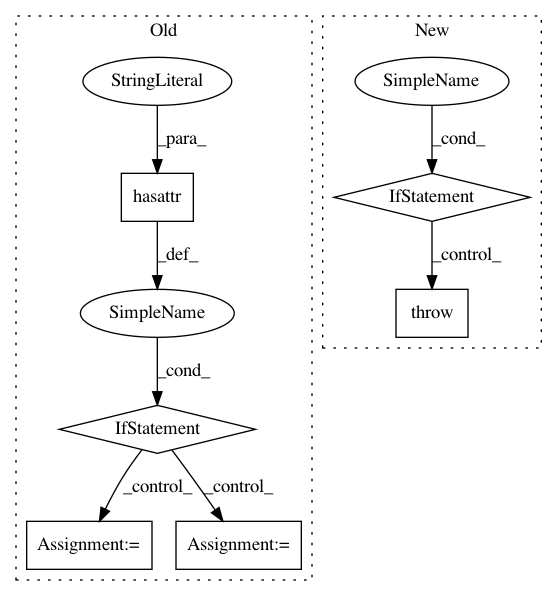

1cc985368e1cd5909fbea41335ef80230a5042cb,src/preprocess.py,,process_task,#Any#Any#Any#,186
Before Change
//val.index_instances(vocab)
else:
val = None
if hasattr(task, "test_data_text") and task.test_data_text is not None:
test = process_split(task.test_data_text, token_indexer, task.pair_input, task.categorical)
//test.index_instances(vocab)
else:
test = None
for instance in train + val + test:
instance.index_fields(vocab)
return train, val, test
After Change
split = process_single_pair_task_split(split_text, token_indexer, is_pair=False)
elif isinstance(task, PairClassificationTask):
split = process_single_pair_task_split(split_text, token_indexer, is_pair=True)
elif isinstance(task, PairRegressionTask):
split = process_single_pair_task_split(split_text, token_indexer, is_pair=True,
classification=False)
elif isinstance(task, SequenceGenerationTask):
pass
elif isinstance(task, RankingTask):
pass
else:
raise ValueError("Preprocessing procedure not found for %s" % task.name)
for instance in split:
instance.index_fields(vocab)
setattr(task, "%s_data" % split_name, split)
return
In pattern: SUPERPATTERN
Frequency: 3
Non-data size: 6
Instances
Project Name: jsalt18-sentence-repl/jiant
Commit Name: 1cc985368e1cd5909fbea41335ef80230a5042cb
Time: 2018-06-17
Author: wang.alex.c@gmail.com
File Name: src/preprocess.py
Class Name:
Method Name: process_task
Project Name: Qiskit/qiskit-aqua
Commit Name: 2aae12b10a3411009a2802a077bb8c6c0365b6ad
Time: 2020-08-28
Author: 31178928+t-imamichi@users.noreply.github.com
File Name: qiskit/aqua/operators/converters/abelian_grouper.py
Class Name: AbelianGrouper
Method Name: group_subops
Project Name: KaiyangZhou/deep-person-reid
Commit Name: 205df55987d9c62c13738bebc5ffe18b738f1c50
Time: 2018-11-08
Author: k.zhou@qmul.ac.uk
File Name: train_vidreid_xent.py
Class Name:
Method Name: main